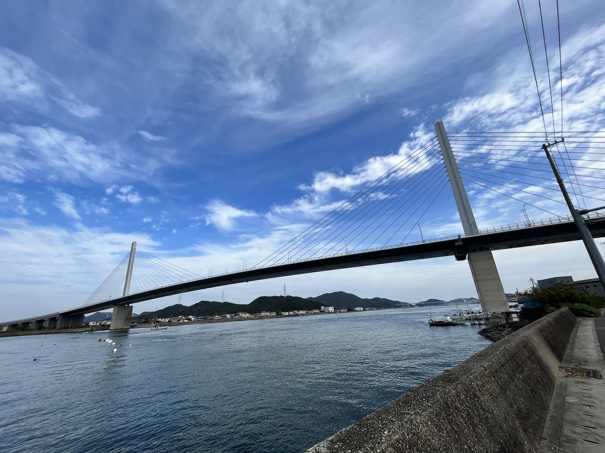

SPOT


味処 あらし
魚が食べたいならここ！いつもにぎわう鳴門の名店。
| 営業時間 | 11:00～21:00 |
|---|---|
| 定休日 | 火曜日 |
| 駐車場 | ８台 |
| 電話 | 088-123-4567 |
| 所在地 | 徳島県鳴門市撫養町大桑島字北ノ浜51-1 |
| webサイト | http://www.arashi-naruto.co.jp/ |
| SNS |

|
| 備考 | 駐車場は席数より少ないです。 メニューはその日の仕入れにより変わります。 土日は混雑する為、予約推奨。 |
最終更新日：2022.12.14


- おすすめメニュー
-
いちごのショートケーキがおすすめです！
- お店から一言
-
いちごのショートケーキがおすすめです！
RECCOMEND


スポット一覧